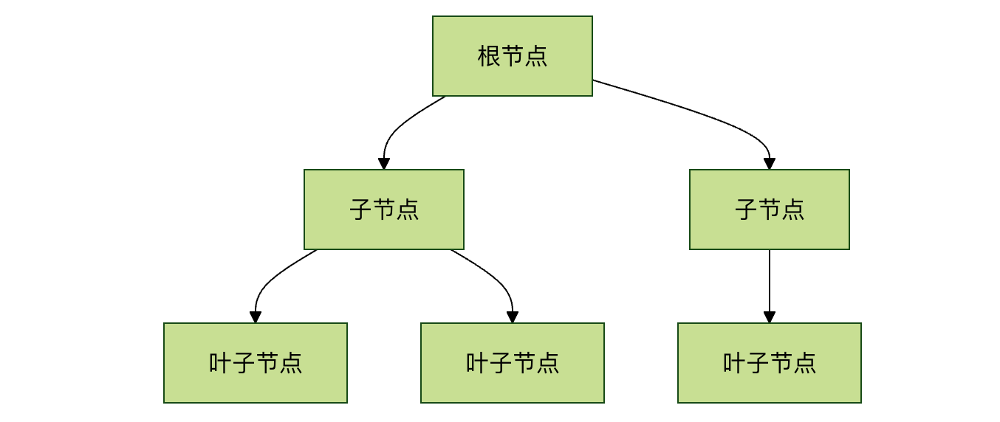
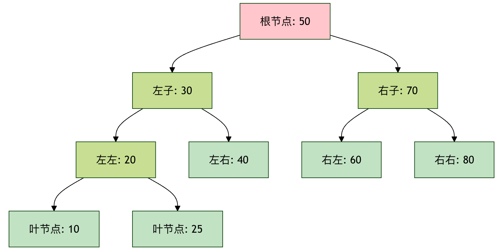

树形结构
树（Tree）是一种非线性的数据结构，它模拟了自然界中树的分支层次，与数组、链表这种一个接一个的线性结构不同，树中的数据元素（称为节点）之间存在明确的一对多的层次关系。
树形结构就像是一棵真实的树：
- 根节点：树的根部，唯一没有父节点的节点
- 子节点：从某个节点分支出去的节点
- 叶节点：没有子节点的节点，像树叶
- 路径：从一个节点到另一个节点的路线
- 深度：从根节点到该节点的路径长度
- 高度：从该节点到最远叶节点的路径长度
生活比喻：
- 家族树：祖父母→父母→子女→孙子女
- 组织架构：CEO→总监→经理→员工
- 文件系统：根目录→子目录→文件
- 图书分类：总类→子类→具体书籍
| 结构类型 | 查找效率 | 插入效率 | 删除效率 | 有序性 |
|---|---|---|---|---|
| 数组 | O(n) | O(n) | O(n) | 无 |
| 链表 | O(n) | O(1) | O(1) | 无 |
| 哈希表 | O(1) | O(1) | O(1) | 无 |
| 二叉搜索树 | O(log n) | O(log n) | O(log n) | 有 |
基本术语
在深入学习之前，让我们先熟悉一下树的基本术语：

- 节点（Node）：树中的每一个元素。它包含存储的数据和指向其子节点的链接。
- 根节点（Root）：位于树顶端的节点，是整棵树的起点。一棵树有且仅有一个根节点。
- 父节点与子节点（Parent & Child）：如果一个节点 A 连接到下方的节点 B，那么 A 是 B 的父节点，B 是 A 的子节点。一个父节点可以有多个子节点。
- 兄弟节点（Siblings）：拥有同一个父节点的节点们互为兄弟节点。
- 叶子节点（Leaf）：没有子节点的节点，也称为终端节点。
- 边（Edge）：连接两个节点的线，表示它们之间的关系。
- 路径（Path）：从根节点到某个特定节点所经过的节点序列。
- 高度（Height）：从某个节点到其最远叶子节点的最长路径上的边数。树的高度即根节点的高度。
- 深度（Depth）：从根节点到某个节点的路径上的边数。根节点的深度为 0。
- 层（Level）：深度相同的所有节点属于同一层。根节点在第 0 层。
树的基本性质
- 唯一路径：树中任意两个节点之间有且仅有一条路径。
- N 个节点，N-1 条边：一棵具有 N 个节点的树，总共有 N-1 条边。
- 无环：树中不存在环（即从某个节点出发，沿着边最终又能回到该节点）。
为什么需要树？—— 树的优势与应用
你可能会问，有了数组和链表，为什么还需要树？答案在于效率。
- 数组：查找快（通过索引），但插入和删除慢（需要移动大量元素）。
- 链表：插入和删除快，但查找慢（需要从头遍历）。
- 树（特别是二叉搜索树）：在保持数据有序的同时，能提供比链表快得多的搜索速度，以及比数组更高效的插入/删除操作。
实际应用场景：
- 文件系统：计算机中的文件夹和文件就是以树的形式组织的。
- 数据库索引：B 树、B+ 树是数据库实现高效查询的核心数据结构。
- 组织结构图：公司或部门的层级管理。
- 决策树：人工智能和机器学习中的分类模型。
- HTML DOM：网页文档对象模型就是一棵树。
二叉树：树家族中最重要的一员
二叉树（Binary Tree）是每个节点最多有两个子节点的树，这两个子节点通常被称为左子节点和右子节点，它是许多强大树结构（如二叉搜索树、堆、AVL 树）的基础。
基本结构如下：

二叉树基本术语
| 术语 | 定义 | 生活比喻 |
|---|---|---|
| 节点 | 包含数据和指针的基本单位 | 家族中的一个人 |
| 根节点 | 树的顶端节点 | 家族中的祖先 |
| 父节点 | 有子节点的节点 | 父母 |
| 子节点 | 被父节点指向的节点 | 子女 |
| 兄弟节点 | 同一父节点的子节点 | 兄弟姐妹 |
| 叶节点 | 没有子节点的节点 | 家族中没有子女的人 |
| 深度 | 从根到该节点的边数 | 世代数 |
| 高度 | 从该节点到最远叶节点的边数 | 该家族延续的代数 |
二叉树类型
| 类型 | 特点 | 时间复杂度 | 应用场景 |
|---|---|---|---|
| 普通二叉树 | 每个节点最多2个子节点 | O(n) | 表达式树 |
| 满二叉树 | 每个节点都有0或2个子节点 | O(n) | 霍夫曼编码 |
| 完全二叉树 | 除最后一层外都是满的 | O(n) | 堆实现 |
| 二叉搜索树 | 左<根<右 | 平均O(log n) | 搜索、排序 |
| 平衡二叉树 | 左右子树高度差≤1 | O(log n) | 数据库索引 |
| 红黑树 | 带颜色的平衡树 | O(log n) | Linux内核 |
二叉搜索树操作
| 操作 | 描述 | 时间复杂度 |
|---|---|---|
| 查找 | 根据值查找节点 | 平均O(log n)，最坏O(n) |
| 插入 | 插入新节点 | 平均O(log n)，最坏O(n) |
| 删除 | 删除指定节点 | 平均O(log n)，最坏O(n) |
| 遍历 | 访问所有节点 | O(n) |
二叉树的遍历
遍历是指按照某种规则访问树中的每一个节点，且每个节点只访问一次。这是树相关算法的基础。主要有四种方式：
前序遍历（Pre-order）：根 -> 左 -> 右
- 先访问根节点，然后递归地前序遍历左子树，最后递归地前序遍历右子树。
- 应用：复制一棵树、获取前缀表达式。
中序遍历（In-order）：左 -> 根 -> 右
- 先递归地中序遍历左子树，然后访问根节点，最后递归地中序遍历右子树。
- 应用：在二叉搜索树中，中序遍历会以升序输出所有值。
后序遍历（Post-order）：左 -> 右 -> 根
- 先递归地后序遍历左子树，然后递归地后序遍历右子树，最后访问根节点。
- 应用：删除一棵树、计算目录大小。
层序遍历（Level-order）：按层，从左到右
- 从根节点开始，一层一层地访问节点。
- 应用：按层级处理数据（如打印组织结构图）。通常使用队列（Queue）辅助实现。

示例：对于下图二叉树，遍历结果如下：
1
/ \
2 3
/ \ \
4 5 6
- 前序：1, 2, 4, 5, 3, 6
- 中序：4, 2, 5, 1, 3, 6
- 后序：4, 5, 2, 6, 3, 1
- 层序：1, 2, 3, 4, 5, 6
实践：用 Python 实现二叉树
理论说够了，让我们动手写代码！我们将实现一个简单的二叉树节点类，并完成插入和遍历操作。
步骤 1：定义节点类
每个节点需要存储数据，并指向其左、右子节点。
实例
"""二叉树节点类"""
def __init__(self, value):
self.value = value # 节点存储的数据
self.left = None # 指向左子节点
self.right = None # 指向右子节点
def __str__(self):
"""方便打印节点信息"""
return f"Node({self.value})"
步骤 2：构建一棵示例树
让我们手动构建前面示例图中的那棵树。
实例
root = TreeNode(1)
node2 = TreeNode(2)
node3 = TreeNode(3)
node4 = TreeNode(4)
node5 = TreeNode(5)
node6 = TreeNode(6)
# 构建连接关系 (Links)
root.left = node2
root.right = node3
node2.left = node4
node2.right = node5
node3.right = node6
print(f"根节点: {root}")
print(f"根节点的左子节点: {root.left}")
print(f"根节点的右子节点: {root.right}")
步骤 3：实现遍历算法（递归版）
递归是实现树遍历最直观的方式。
实例
"""前序遍历：根 -> 左 -> 右"""
if node is None:
return
print(node.value, end=' ') # 1. 访问根节点
preorder_traversal(node.left) # 2. 遍历左子树
preorder_traversal(node.right) # 3. 遍历右子树
def inorder_traversal(node):
"""中序遍历：左 -> 根 -> 右"""
if node is None:
return
inorder_traversal(node.left) # 1. 遍历左子树
print(node.value, end=' ') # 2. 访问根节点
inorder_traversal(node.right) # 3. 遍历右子树
def postorder_traversal(node):
"""后序遍历：左 -> 右 -> 根"""
if node is None:
return
postorder_traversal(node.left) # 1. 遍历左子树
postorder_traversal(node.right) # 2. 遍历右子树
print(node.value, end=' ') # 3. 访问根节点
print("\n--- 遍历演示 ---")
print("前序遍历结果:", end=' ')
preorder_traversal(root) # 输出: 1 2 4 5 3 6
print("\n中序遍历结果:", end=' ')
inorder_traversal(root) # 输出: 4 2 5 1 3 6
print("\n后序遍历结果:", end=' ')
postorder_traversal(root) # 输出: 4 5 2 6 3 1
步骤 4：实现层序遍历（使用队列）
层序遍历需要借助队列的"先进先出"特性。
实例
def level_order_traversal(root):
"""层序遍历：使用队列"""
if root is None:
return
queue = deque([root]) # 初始化队列，放入根节点
while queue:
current_node = queue.popleft() # 1. 从队列左侧取出节点
print(current_node.value, end=' ') # 2. 访问该节点
# 3. 将该节点的子节点（如果存在）按顺序加入队列右侧
if current_node.left:
queue.append(current_node.left)
if current_node.right:
queue.append(current_node.right)
print("\n层序遍历结果:", end=' ')
level_order_traversal(root) # 输出: 1 2 3 4 5 6
练习与挑战
恭喜你完成了基础学习！要真正掌握树，动手练习必不可少。
练习 1：计算树的高度
编写一个函数tree_height(node)，接收一个树的根节点，返回这棵树的高度（空树高度为 -1 或 0，约定俗成即可，本例我们定义为边数）。
提示：树的高度 = 1 + max(左子树高度， 右子树高度)。这是一个典型的递归问题。
练习 2：在二叉树中搜索值
编写一个函数search_in_tree(node, target_value)，在给定的二叉树中搜索是否存在值等于target_value的节点。如果找到，返回True，否则返回False。
提示：可以使用任何一种遍历方法，访问每个节点时比较其值。
挑战：二叉搜索树（BST）
这是二叉树的一个经典变种。在二叉搜索树中，对于任意节点：
- 其左子树中所有节点的值<该节点的值。
- 其右子树中所有节点的值>该节点的值。
你的挑战是：
- 实现
insert_into_bst(root, value)函数，将一个值插入到二叉搜索树的正确位置。 - 实现
search_in_bst(root, value)函数，利用 BST 的特性进行高效查找（平均时间复杂度 O(log N)）。
点我分享笔记
<p style="font-size:14px;">笔记需要是本篇文章的内容扩展！</p><br> <p style="font-size:12px;"><a href="../tougao.html" target="_blank">文章投稿，可点击这里</a></p> <p style="font-size:14px;"><a href="../w3cnote/runoob-user-test-intro.html" target="_blank">注册邀请码获取方式</a></p> <h3 class="text-muted"><i class="fa fa-info-circle" aria-hidden="true"></i> 分享笔记前必须<a href=";.html" class="runoob-pop">登录</a>！</h3> <p><a href="../w3cnote/runoob-user-test-intro.html" target="_blank">注册邀请码获取方式</a></p>